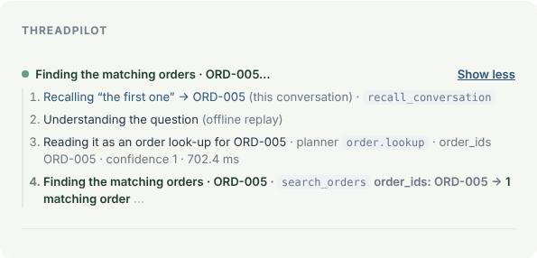
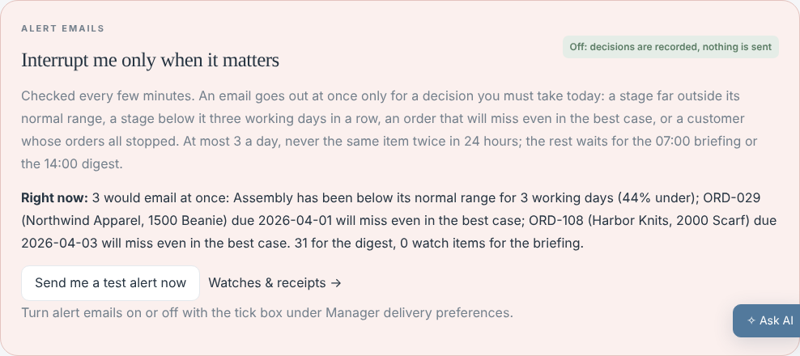
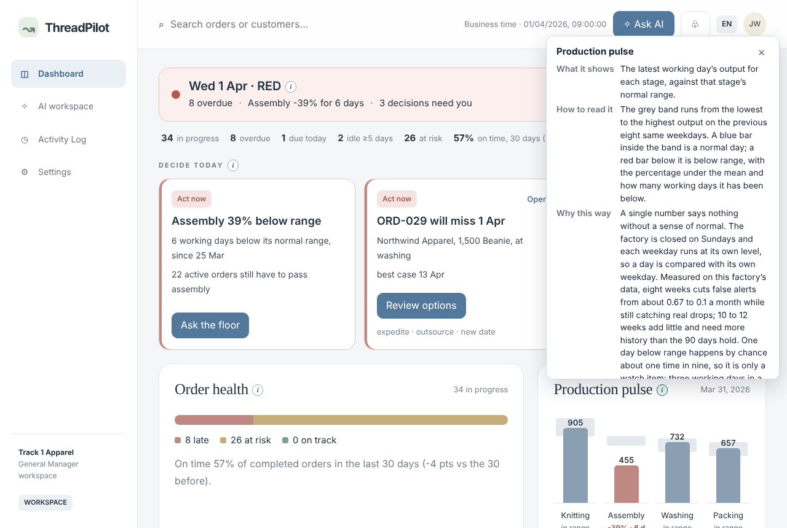

One line says what is happening now; “Show more” lists every step: memory, the planner’s reading, each tool call with its inputs, result, source rows and time. Several orders in one chat: “the first one”, “the other one”.

A stage 3.5 SD under its mean, three days below range, or an order that will miss even in the best case: an email at once, at most 3 a day, 24-hour cooldown. Measured: 0.47 false alarms a month; a 40% one-day drop caught the same day 94% of the time. Off until the manager switches it on.

An “i” on every chart: what it shows, how to read it, why this way. Why eight same weekdays: false alerts fall from 0.67 to 0.1 a month between four and eight weeks, and more weeks add little. Voice in and out for the floor; a spoken “send now” still waits for a tap.
ThreadPilot · Group 19 · 6